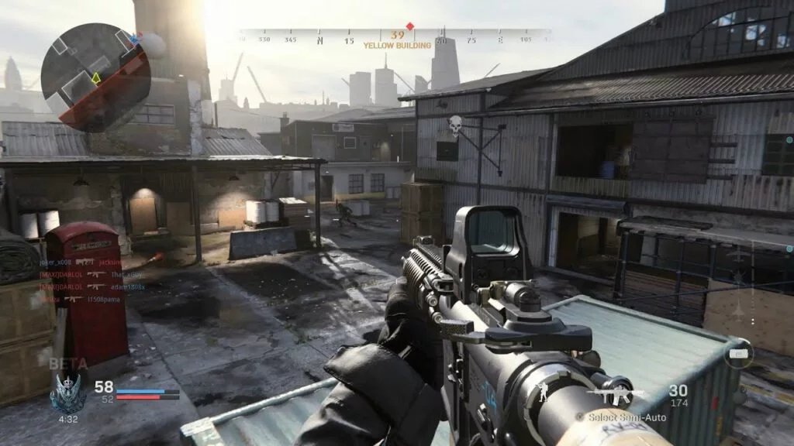
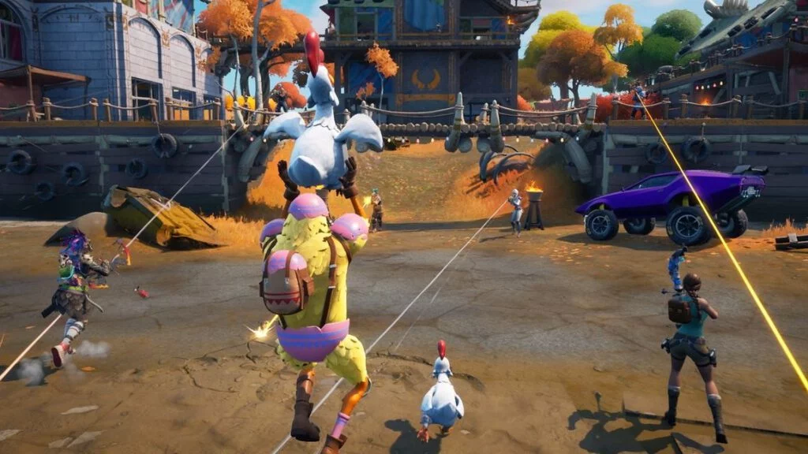
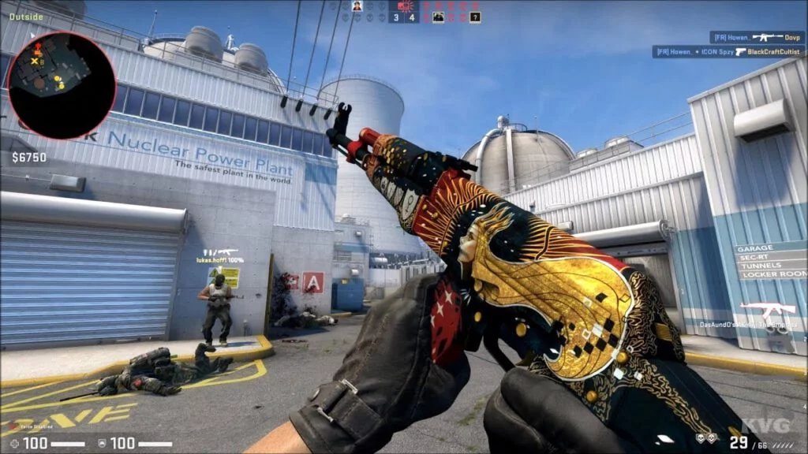

FPS

Estes jogos tem como principal característica a câmera posicionada como os olhos do personagem, dando a sensação de que é o jogador que está vivenciando a experiência (daí o termo “1ªpessoa”, pois o jogador se refere ao personagem que controla como “eu”).
A principal mecânica de jogo de um FPS é atirar. Estes jogos são uma evolução de games que utilizavam pistolas como Duck Hunt (NES) e dos jogos de tiro sobre trilhos como House of the Dead (PS1) ou Mad Dog McCree (3DO).
Voltar ao inicio
Battle Royale

Outro derivado importante dos jogos de tiro em primeira pessoa, o gênero FPA significa First Person Adventure, e consistem em jogos eletrônicos com a perspectiva em primeira pessoa, mas nos quais a mecânica principal não é abater todos os inimigos e sim a exploração do cenário e resolução de quebra-cabeças – elementos que fazem parte de um gênero bastante abrangente e tradicional, Ação e Aventura (The Legend of Zelda, Tomb Raider, Uncharted, Assassin’s Creed, Prince of Persia, God of War, etc), mas que ganham aqui um grau maior de imersão, por colocar o jogador “dentro da pele” do aventureiro.
A série Metroid Prime, da Nintendo, é um ótimo exemplo de jogos eletrônicos FPA. Nestes jogos, o jogador assume o papal da protagonista Samus Aram e explora mundos alienígenas. Em Resident Evil Village, o jogador explora um vilarejo assombrado por monstros e precisa descobrir pistas e resolver puzzles para salvar sua família.
Voltar ao inicio
FPA
Outro derivado importante dos jogos de tiro em primeira pessoa, o gênero FPA significa First Person Adventure, e consistem em jogos eletrônicos com a perspectiva em primeira pessoa, mas nos quais a mecânica principal não é abater todos os inimigos e sim a exploração do cenário e resolução de quebra-cabeças – elementos que fazem parte de um gênero bastante abrangente e tradicional, Ação e Aventura (The Legend of Zelda, Tomb Raider, Uncharted, Assassin’s Creed, Prince of Persia, God of War, etc), mas que ganham aqui um grau maior de imersão, por colocar o jogador “dentro da pele” do aventureiro.
A série Metroid Prime, da Nintendo, é um ótimo exemplo de jogos eletrônicos FPA. Nestes jogos, o jogador assume o papal da protagonista Samus Aram e explora mundos alienígenas. Em Resident Evil Village, o jogador explora um vilarejo assombrado por monstros e precisa descobrir pistas e resolver puzzles para salvar sua família.
Voltar ao inicio
PVP

Uma modalidade presente em quase todo tipo de jogo (em FIFA, o jogador pode disputar partidas de futebol com outro, enquanto em Gran Turismo, corridas online colocam vários jogadores na mesma pista), o PVP pode ser visto também como um gênero, pois há jogos eletrônicos que têm como mecânica central o engajamento dos jogadores em conflitos uns contra os outros.
É o caso de muitos shooters online: em Counter-Strike, um time de jogadores precisa plantar uma bomba num local específico do mapa, enquanto outro time deve impedir que a bomba seja detonada. Em Overwatch, heróis com super poderes se enfrentam em partidas online em que vence o time que empurrar um carrinho até a base inimiga, ou que controlar pontos estratégicos da arena por mais
Voltar ao inicio